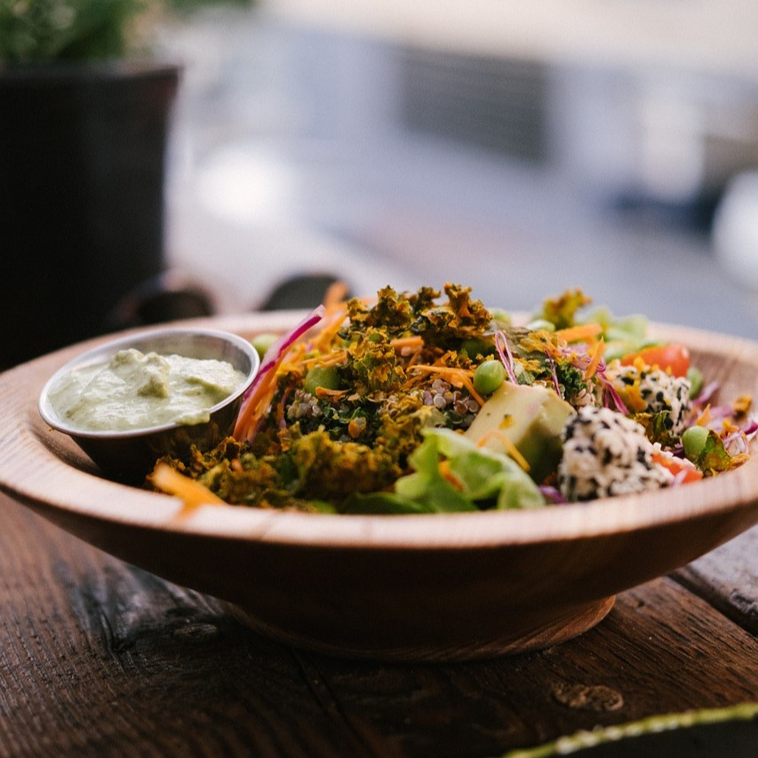

Welcome:
Welcome to Veggie Vibes, where we pride ourselves on offering a vibrant and inclusive dining experience for all our guests.
Nestled in the heart of Seattle, Washington, our restaurant is a true celebration of diversity and community.
At Veggie Vibes, we believe that bringing good, sustainable food to our community can make the world a better place for generations to come.
Our commitment to inclusivity goes beyond our menu.
We strive to create an environment where everyone feels at home, with accessible seating and a staff trained in cultural sensitivity and inclusivity.
We also host a variety of community events, from open mic nights to sustainable cooking workshops, fostering a sense of belonging and connection.
Join us at Veggie Vibes, where every meal is a celebration of YOU!
Our Story:
We first opened our doors in 2019, and as you may know, what events came soon after, we only had our doors open for six months before we were forced to close them, we did not know how long this would last.
Our team went hard at work to comply with regulations so that we may reopen.
However, the pandemic lasted for much longer than any of us anticipated.
To ensure no one was laid off, our owners found work elsewhere and poured every penny into the restaurant.
Soon after, we learned that we would be able to open once again.
We relaunched and have been busy every day since.
We have a passion for the world, our environment, and our community.
We decided that it was time for change in our community, and we plan to be part of that change.
Location and Hours:
Address: 123 Main St. Seattle WA
Hours: Open 7 days a week, from 12:00 PM to 8:00 PM